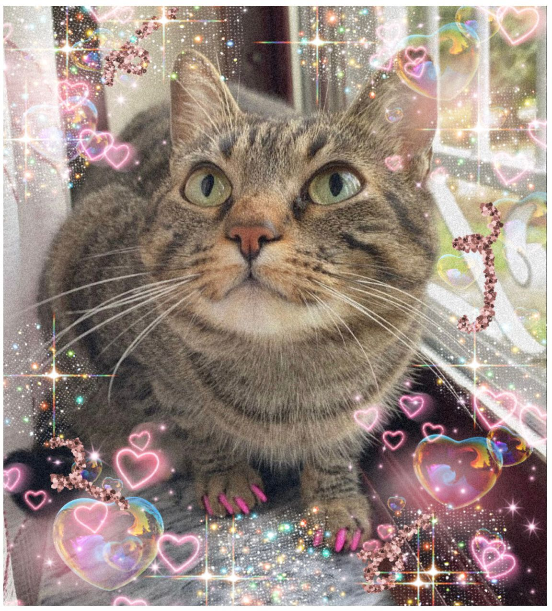

Sobre nós
Algumas informações sobre nós:
| Xingyu CHEN | Inês BARREIROS | Ihsane GHAMMATT | Yifan MIAO |
|---|---|---|---|
|  | |||
| Xingyu. | Sou licenciada em línguas literaturas e culturas na Faculdade de letras da Universidade de Lisboa. Trabalhei durante 1 ano como assistente de língua portuguesa em França. Atualmente estou a fazer um mestrado em TAL para expandir os meus conhecimentos línguisticos e ter bases de informática. | Sou licenciada em árabe e hébreu na Universidade de Inalco, e trabalhei como professora de línguas durante 3 anos. Atualmente estou a fazer um mestrado em TAL para me reconectar com a informática. | Yifan. |
| Hobbies: , , , , , . | Hobbies: leitura, crochet, viagens, cinema. | Hobbies: documentários, leitura, cozinha, viagens. | Hobbies: |
| Línguas : . | Línguas: português,inglês,francês e espanhol. | Línguas: árabe, francês, espahnol e hébreu. | Línguas: . |
| Github | Github | Github | Github |